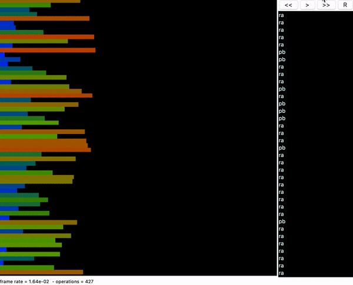

romain hoarau
this project is not about finding the fastest sorting algorithm but sorting a stack with the least amount of instructions.
it got really tricky because you only have a limited set of instructions. For example, you can not search the smallest integer of the stack and push it to the top (it would be too easy hehe).
no, instead, you have to rotate the whole stack one integer at a time until the smallest one is at the top.
Take a look!
if you're intrigued, you will find the source code of this project on my dedicated github page.